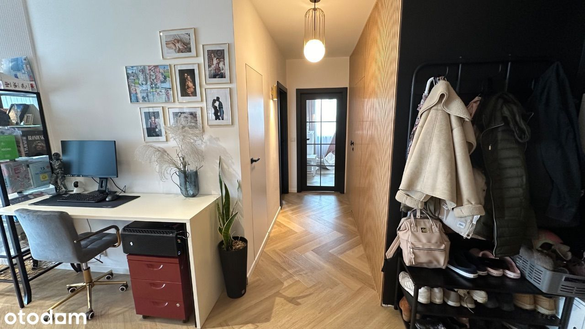
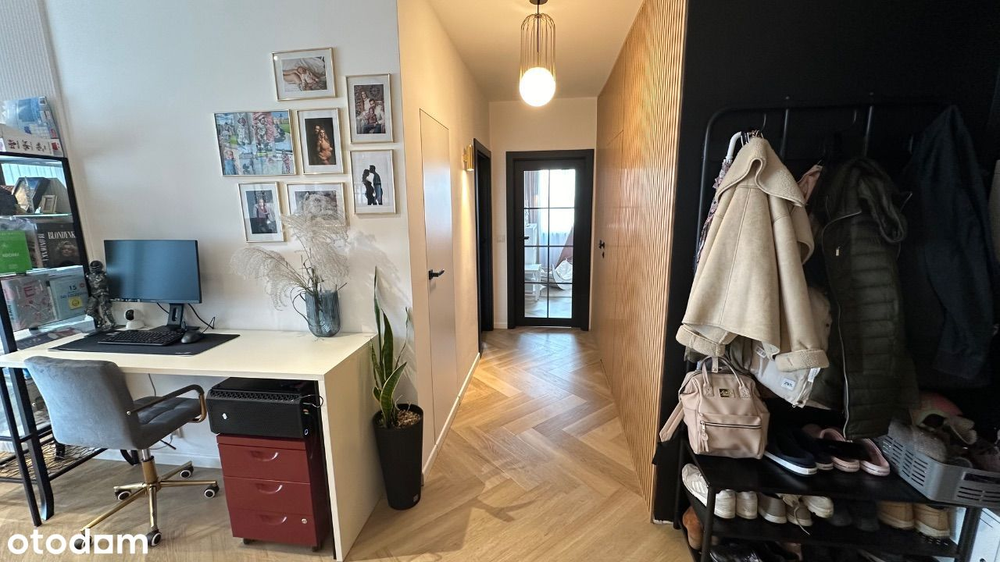

Na sprzedaż przestronne i jasne mieszkanie 80m2 na Osiedlu Wilno zlokalizowane na 2 piętrze w bloku przy ul. Wiernej 23B, ekspozycja zachodnio(salon) - północna(sypialnie) Mieszkanie składa się z przestronnego salonu z aneksem kuchennym z dużą wyspą, 3 sypialni ( w tym jedna otwarta na salon - możliwość ponownej zabudowy lub aranżacji biura/jadalni), 2 łazienek, garderoby i balkonu. Zabudowa meblowa w kuchni wykonana w systemie Ikea, blaty drewniane. Sprzęty kuchenne marki Samsung, piekarnik DualCook, zmywarka Bosh. Część kuchenną od dziennej oddziela ścianka medialna w loftowym stylu. Między szafkami kuchennymi i na ścianie w salonie położone płytki włoskiej firmy Marazzi ze złotą żyłką. W salonie zostały użyte panele dekoracyjne firmy Orac Decor. W pierwszej łazience znajduje się wanna wolnostojąca, toaleta, umywalka oraz pralka i suszarka w zabudowie meblowej. Wanna wolnostojąca firmy Hagser, umywalka Massi, płytki Marazzi, zabudowa meblowa wykonana przez stolarza na zamówienie. W drugiej łazience znajduje się prysznic, toaleta, umywalka. Zabudowy meblowe wykonane przez stolarza na zamówienie, płytki Marazzi i Tubądzin, umywalka Massi. W korytarzu położone lamele dekoracyjne firmy VOX, w których ukryte są drzwi do łazienki. Drzwi ukryte do łazienek i garderoby firmy DRE, drzwi do sypialni firmy Voster. W całym mieszkaniu położone są wysokiej jakości panele winylowe marki Therdex - pióro wpust z podkładem korkowym. Mieszkanie wyposażone jest w klimatyzację marki Gree oraz czujnik dymu. Do mieszkania przynależy miejsce postojowe w garażu podziemnym, bardzo blisko wyjścia z klatki. Sprzedaż bezpośrednia, cena do negocjacji - zapraszam do kontaktu :)
 
